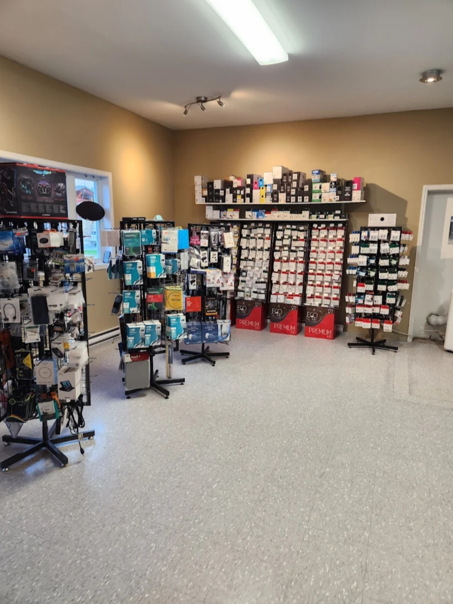
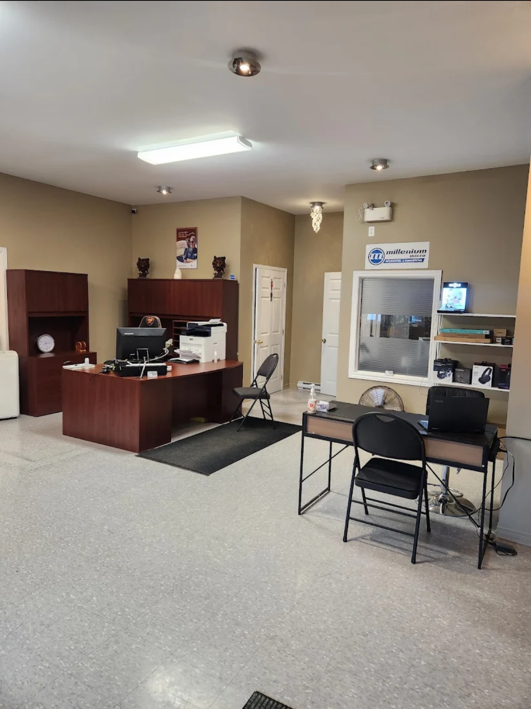
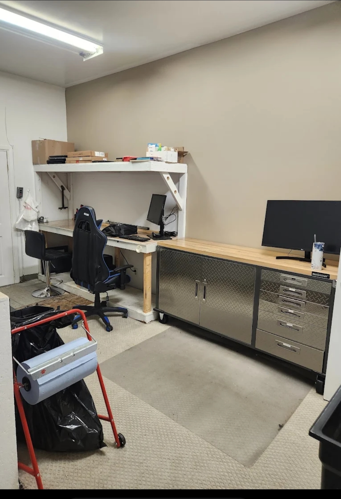

Notre magasin
Venez nous rencontrer directement en magasin. Nous offrons un service professionnel, des conseils honnêtes et un accueil chaleureux.




Réparation d'ordinateurs, réparation de cellulaires, montage de PC Gamer, assistance technique, récupération de données, installation de Windows et bien plus.
Diagnostic, réparation, optimisation et nettoyage complet.
Écran, batterie, connecteur de charge et bien plus.
Assemblage personnalisé, mise à niveau et entretien.
Ordinateurs neufs et usagés, accessoires et composantes.
Récupération de fichiers supprimés et de disques défectueux.
Installation de routeurs, optimisation du Wi-Fi et dépannage réseau.
Venez nous rencontrer directement en magasin. Nous offrons un service professionnel, des conseils honnêtes et un accueil chaleureux.




Bonjour! Je suis Francis Patry, passionné d'informatique et propriétaire d'Informatique Francis Patry.
Mon objectif est simple : offrir un service rapide, professionnel et personnalisé à chaque client.
Que ce soit pour réparer un ordinateur, monter un PC Gamer, récupérer des données ou résoudre un problème informatique, il me fera plaisir de vous aider.
| Lundi | 8h00 à 17h00 |
| Mardi | 8h00 à 17h00 |
| Mercredi | 8h00 à 17h00 |
| Jeudi | 8h00 à 17h00 |
| Vendredi | 8h00 à 16h00 |
| Samedi | Fermé |
| Dimanche | Fermé |
📞 Téléphone : 819-463-0999
📧 Courriel : fpatry9@gmail.com
📍 Adresse :
87E rue Saint-Joseph
Gracefield (Québec)
J0X 1W0